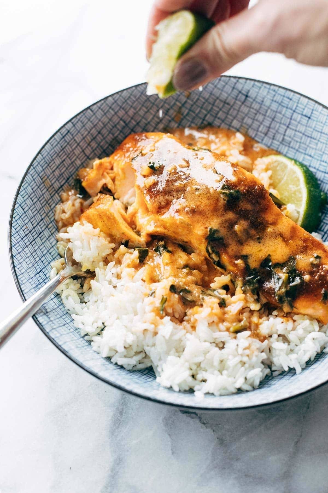
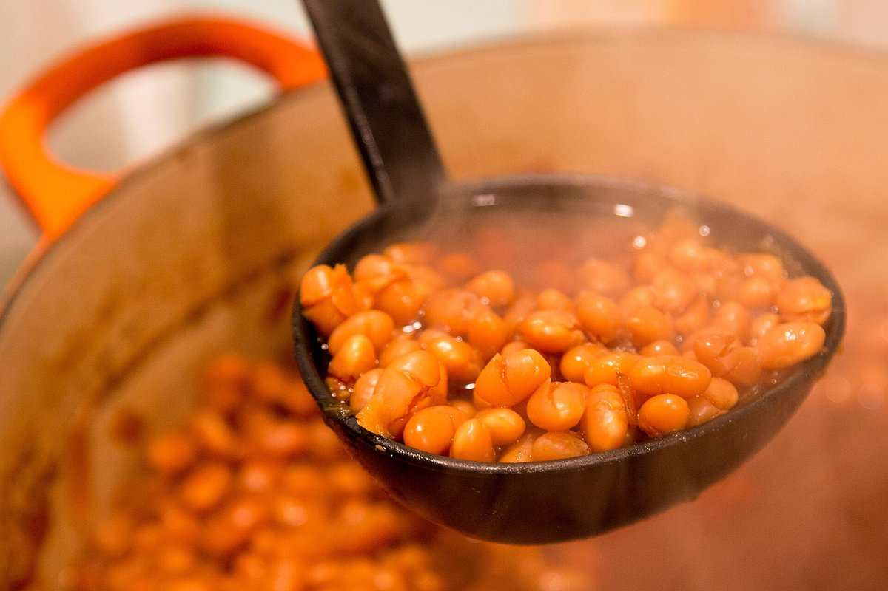
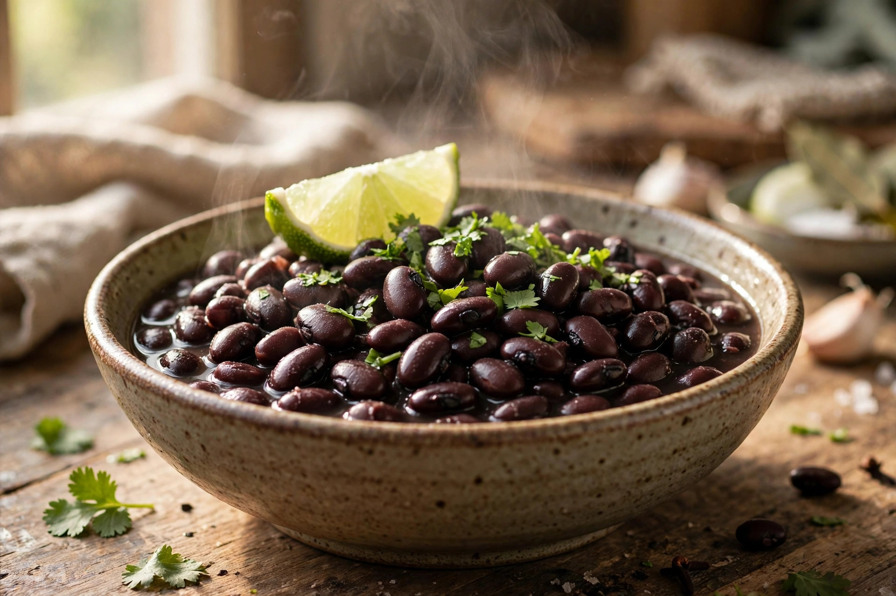
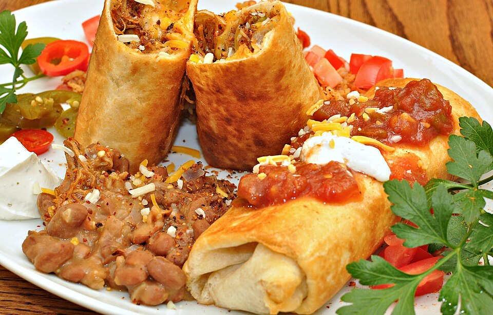
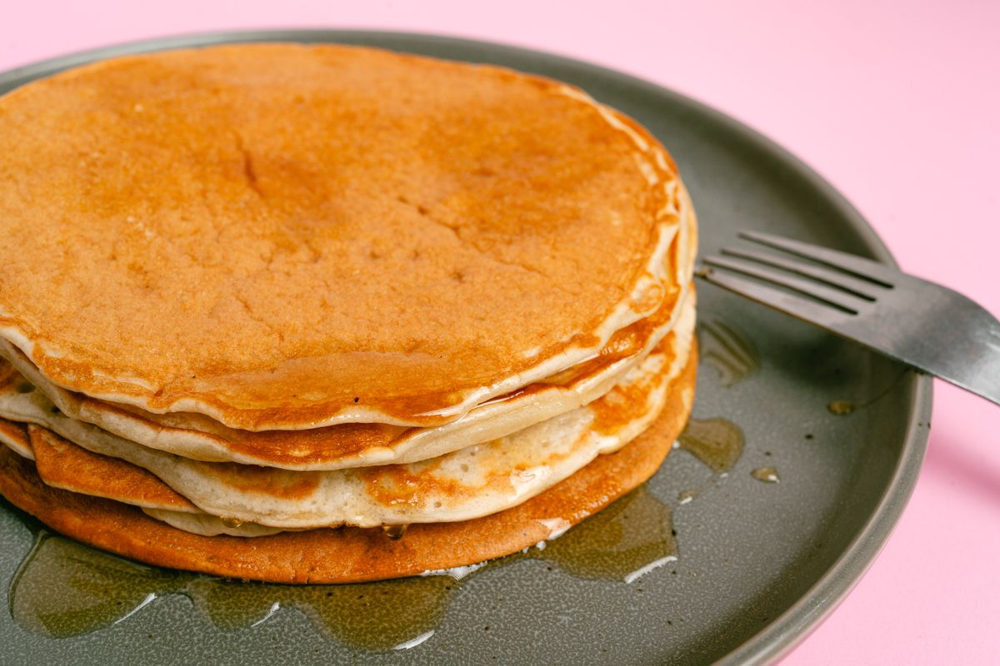
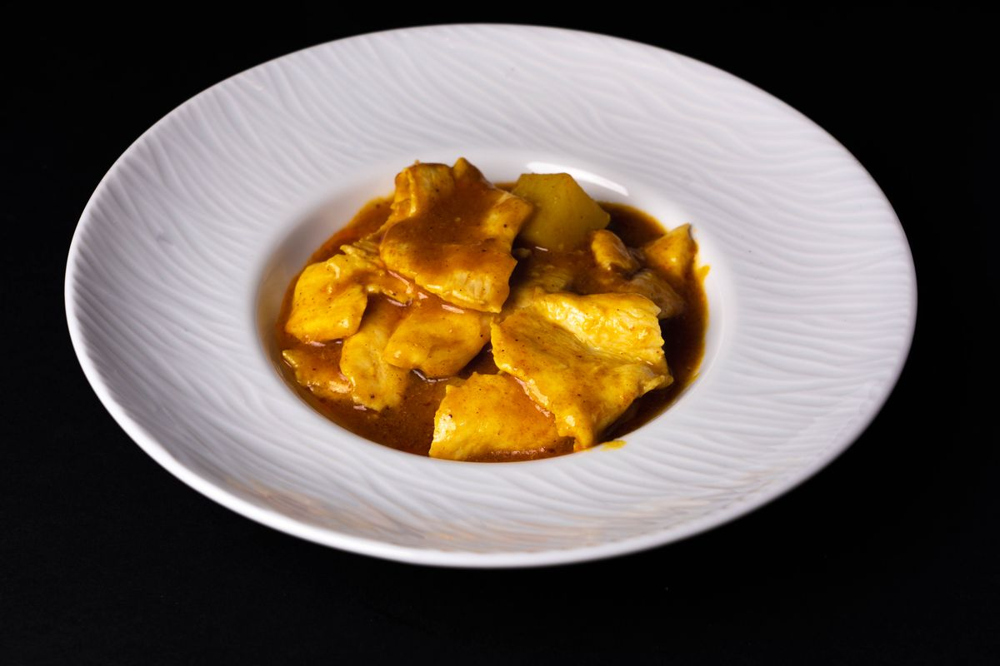
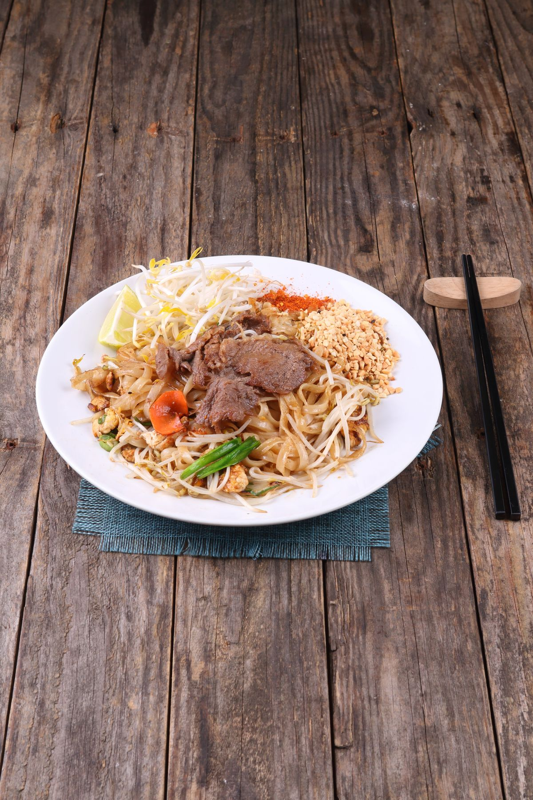
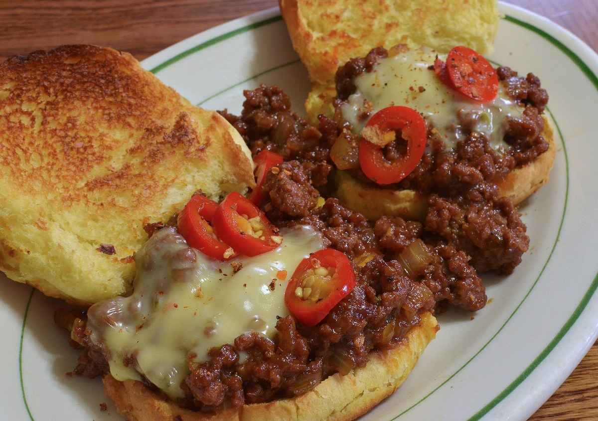
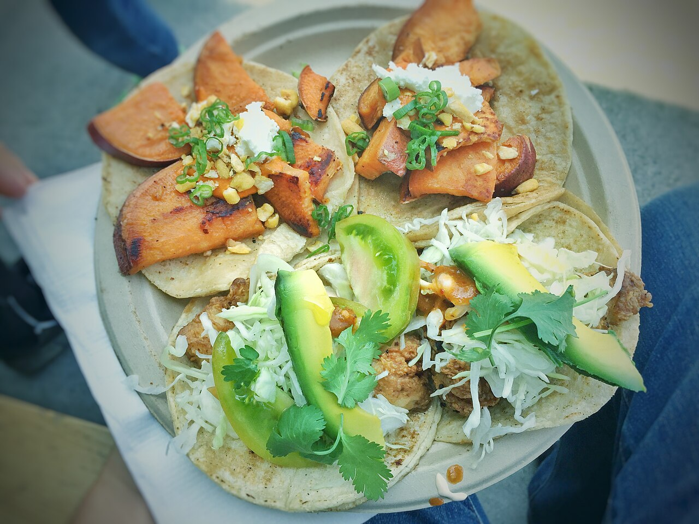
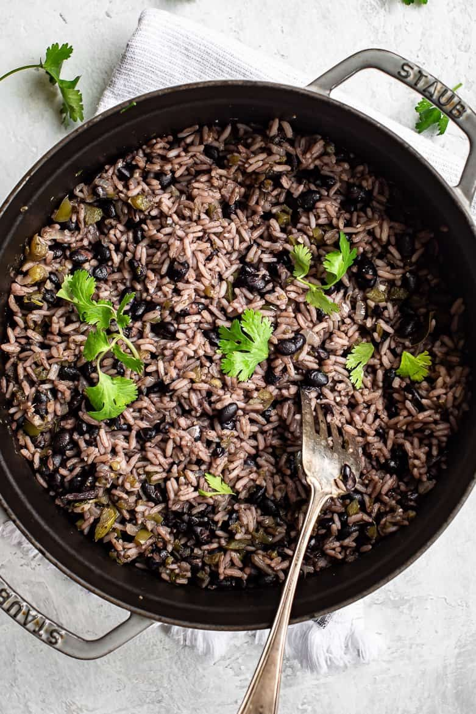

Corn Casserole
Paula Deen's five-ingredient corn casserole — Jiffy mix, two cans of corn, sour cream and butter.

Salmon Coconut Curry
Pan-seared salmon in a creamy Thai red curry coconut sauce with carrots and broccolini.

Calico Beans
Beef, bacon and four kinds of beans in a sweet brown-sugar sauce — the potluck classic.

Lemongrass Basil Chicken Stir Fry
Chicken, carrots, broccoli, bok choy and peppers in Kevin's Lemongrass Basil sauce. His own recipe — the wok photo is his.

Cuban Black Beans
Instant Pot black beans: soak overnight, 5–8 minutes at pressure, finish with salt and vinegar or lime.

Black Bean Chimichangas
Air-fryer chimichangas — black beans, brown rice and corn in whole wheat tortillas, crispy with no deep frying.

Ritz Cracker Meatloaf
Beef and Ritz crackers soaked in milk, sautéed peppers and onion, ketchup–sweet chili glaze on twice. Done at 165°F.
Cornbread
Jiffy mix, milk, egg whites, Stevia — pressure cooked in a springform pan. 15 minutes, 10 minutes natural release.

Pesto Fish
Filed as Pesto Fish (rename later). The card itself: baked fish in garlic butter with lemon.

Jambalaya
Zatarain's box, chicken and andouille, browned first, 8 minutes at pressure. His words: super simple.

Pancake Mix
Flour, sugar, baking powder, salt — his dry mix, ready when pancakes are on.

Pancakes
His from-scratch batter: flour, milk, egg, melted butter. Partner to the dry Pancake Mix.

Salsa (Canned)
Shelly's canned salsa (2010): tomatoes, peppers, onion, jalapeños — simmer two hours, jar.

Instant Pot Thai Coconut Chicken
Grilled chicken thigh in a Thai coconut sauce, heated through in the Instant Pot. Dinner in about 10 minutes.

Pad Thai with Chicken
The Pulmuone kit — rice noodles, vegetables and chicken in a sweet and tangy sauce, peanut topping at the end.

Sloppy Joes
Two pounds of meat in a sweet and tangy ketchup-mustard sauce. Six ingredients, one pan.

Cilantro-Lime Yogurt Sauce
Greek yogurt, cilantro and lime — the Feed Zone-style crema for tacos and burrito bowls.

Ken Earley's Rice
Dominican moro de habichuelas negras — black beans and rice cooked together in one pot.

Low Carb Nut Bars
Peanuts, cashews and almonds in a warm peanut-butter and honey mix, frozen and cut.

No-Bake Keto Granola Bars
Almonds and coconut flakes in golden syrup, chocolate melted over the top.

5-Ingredient Protein Bars (No-Bake)
Five ingredients: peanut butter, maple syrup, whey protein, oats. 14g protein a bar.

Protein Bars (Low Carb & Sugar Free)
Hazelnuts, almond flour, cocoa, collagen — pressed and chilled.

Keto Granola Bars with Coconut
The coconut bar he asked for: coconut inside, coconut oil binding, almonds and pumpkin seeds, chocolate drizzle.

Keto Chocolate Protein Bars (Nut Free)
The nut-free bar: sunflower seeds and seed butter, chocolate protein powder, cocoa.